|
|
|
Purple-spotted
flatworm
Pseudoceros laingensis
Family
Pseudocerotidae
updated
Feb 2020
Where
seen? This delightfully spotted flatworm is sometimes seen
on our Northern shores, among coral rubble. It seems to be seasonally
common, with many of worms seen on one visit, and none later on. It
is more active at night. The flatworm is named after Laing Island in Papua New Guinea.
Features: 4-6cm long. Body cream with scattered purple spots. Some have very few spots
on the body, in others, there are portions with spots and portions
without. On the body margin are purple spots close to one another, margin usually not very ruffled. Underside uniformly
cream. It has a pair of
small pseudotentacles made up of simple folded edge of the
body.
Those with a yellow body have just eaten, and the yellow colour will fade to cream once the food is digested. Some may be seen with a paler or white stripe along the centre of the body, this is the intestine that shows through the body and is not used to identify the worm.
Good mother: One study has found this worm to display long-term parental care. |
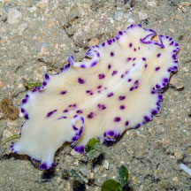
Chek Jawa, Jun 05 |
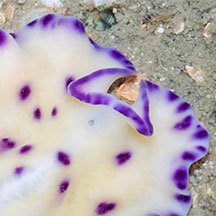
Pseudotentacles simple fold of the body edge.
|
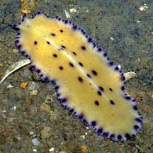
Yellowish body=just ate! Will turn to cream after food is digested.
Changi, May 09 |
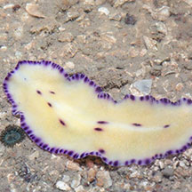
Beting Bronok, Jun 17
Photo shared by Marcus Ng on facebook. |
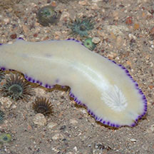
Underside
Beting Bronok, Jun 17
Photo shared by Marcus Ng on facebook. |
|
| Purple-spotted
flatworms on Singapore shores |
| Other sightings on Singapore shores |
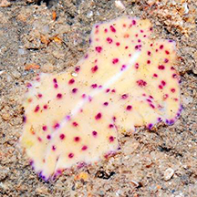
Changi, Dec 13
Photo shared by Loh Kok Sheng on his blog. |
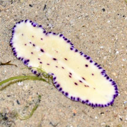
Changi, May 17
Photo shared by Loh Kok Sheng on facebook. |
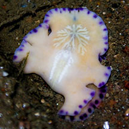
Changi, Aug 18
Photo shared by Jonathan Tan on facebook. |
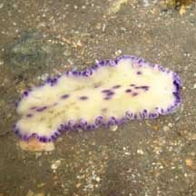
Chek Jawa, Oct 10
Photo shared by Neo Mei Lin on her
blog. |
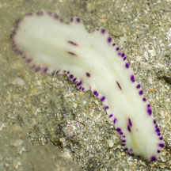
Chek Jawa, May 25
Photo shared by Vincent Choo on facebook. |
|
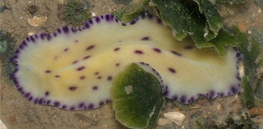
Beting Bronok, May 11
Photo shared by Toh Chay Hoon on her
blog. |
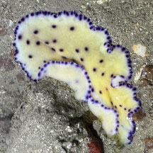
Betint Bronok, Jun 25
Photo
shared by Adriane Lee on facebook. |
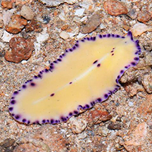
Pulau Sekudu, Jul 15
Photo shared by Loh Kok Sheng on his blog. |
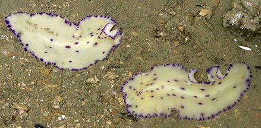
Pulau Ubin, Jul 17
Photo shared by Abel Yeo on facebook.. |
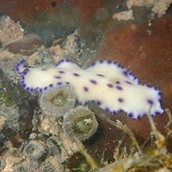
Sentosa Serapong, Jun 18
Photo shared by Abel Yeo on facebook. |
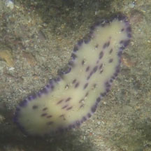
Sentosa Serapong, May 24
Photo shared by Kelvin Yong on facebook. |
|
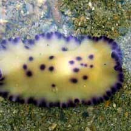
Pulau Semakau, May 08
Photo shared by Tan Sijie on his
blog. |
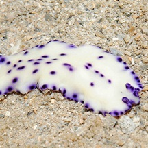
Terumbu Raya, Jul 11
Photo shared by Lok Kok Sheng on his
blog. |
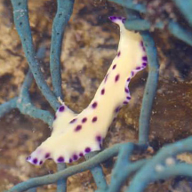
Terumbu Raya, Jun 15
Photo shared by Russel Low on facebook. |
|
Acknowledgement
Grateful thanks to Rene Ong for sharing details and identifying the flatworms on this page.
Links
- Pseudoceros
laingensis on Encyclopedia of Life, LifeDesks, Marine
Flatworms - Polycladida: Technical fact sheet.
References
- Mating behavior, spawning, parental care, and embryonic development of some marine pseudocerotid flatworms (Platyhelminthes: Rhabditophora: Polycladida) in Singapore.
Samantha Jia Wen Tong and Rene S.L. Ong. 27 June 2020. Invertebrate Biology.
- Rene S.L. Ong and Samantha J.W. Tong. 29 October 2018. A preliminary checklist and photographic catalogue of polyclad flatworms recorded from Singapore. Nature in Singapore 2018 11: 77–125.
- D. M. Bolaños, B. Q. Gan & R. S. L. Ong. 29 Jun 2016. First records of pseudocerotid flatworms (Platyhelminthes: Polycladida: Cotylea) from Singapore: A taxonomic report with remarks on colour variation.(pdf) The Raffles Bulletin of Zoology Supplement No. 34: 130-169 Pp. 130-169.
- Newman, L.J.
& Cannon, L.R.G. Pseudoceros (Platyhelminthes: Polycladida) from the Indo-Pacific with twelve
new species from Australia and Papua New Guinea. The Raffles Bulletin of Zoology 1998 Pp. 293-323.
- Newman, Leslie
and Lester Cannon. 2003. Marine
Flatworms: The World of Polyclads.
CSIRO Publishing. 97pp.
- Humann, Paul
and Ned Deloach. 2010. Reef
Creature Identification: Tropical Pacific New World Publications.
497pp.
- Kuiter, Rudie
H and Helmut Debelius. 2009. World
Atlas of Marine Fauna. IKAN-Unterwasserachiv. 723pp.
|
|
|